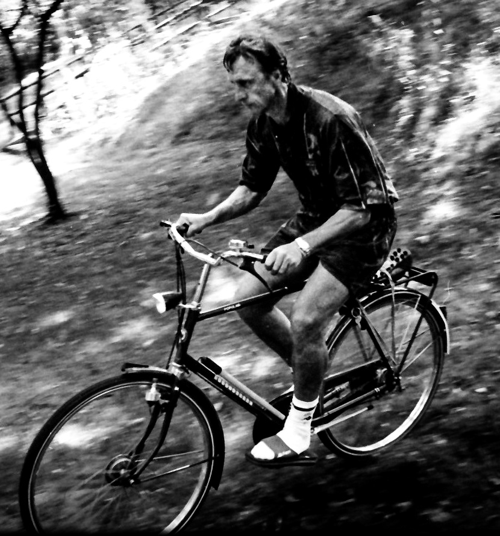
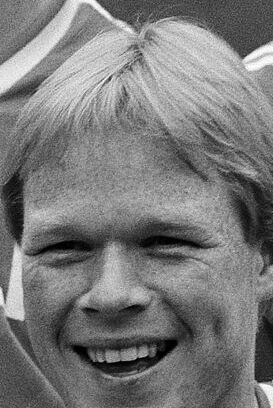

Wembley
FOTO (1956): DR NEIL CLIFTON CC BY-SA 2.0 (MODIFICADA)
1992
FICHA · PARTIDO
FC BARCELONA
FINAL · COPA DE EUROPA
1961
ARCHIVO: RECREACIÓN
FINAL · COPA DE EUROPA
1986
ARCHIVO: RECREACIÓN

JOHAN CRUYFF, ENTRENADOR DEL BARÇA, TRAS UN ENTRENO (1994) FOTO: DAN UNEKEN · CC0
FICHA · ENTRENADOR
FC BARCELONA · 1988–1996
Wembley
FOTO (1956): DR NEIL CLIFTON · CC BY-SA 2.0 (MODIFICADA) LÍNEAS Y GRADA: RECREACIÓN
ANTES DE SALIR · J. CRUYFF
— J. Cruyff, Wembley 1992
TRADUCCIÓN (THE NATIONAL, CNN, GOAL)
0'
PRÓRROGA
90 + 22 · RELOJ: RECREACIÓN

R. KOEMAN (1988) FOTO: ROB CROES / ANEFO · CC0
PIZARRA: RECREACIÓN
SAMPDORIA
BARÇA
0
0
PRÓRROGA · MIN. 112
MARCADOR: RECREACIÓN
ANTES DE SALIR · J. CRUYFF
Salid y
DISFRUTAD
— J. Cruyff, Wembley 1992
FOTOS: DAN UNEKEN (CC0) · ROB CROES / ANEFO (CC0) DR NEIL CLIFTON (CC BY-SA 2.0) · VÍA WIKIMEDIA COMMONS COPA, CAMPO, GRADA, RELOJ, PIZARRA Y MARCADOR: RECREACIÓN